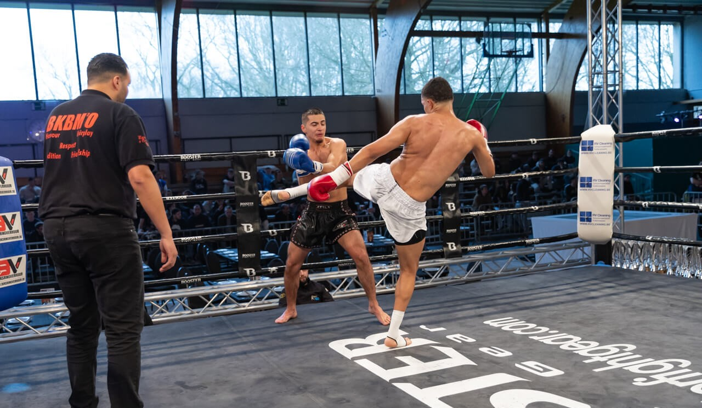

Eén van me passies is kickboksen. Het is niet alleen een sport voor me maar ook manier om mezelf uit te dagen en fit te blijven. Ik begon met kickboksen toen ik ongeveer 12 jaar oud was. Me vriend heeft me een keer meegenomen naar een training en ben sinsdien blijven gaan en niet gestopt. Wat ik zo leuk vind aan kickboks is het gevoel dat je daar in die ring staat. Bovendien vind ik het leuk om nieuwe technieken te leren en mezelf uit te dagen tijdens me wedstrijden en zeker ook tijdens het sparen.
Kickboksen heeft me niet alleen fysiek sterker gemaakt, maar ook mentaal. Het heeft me discipline bijgebracht en mijn zelfvertrouwen vergroot. Voor in de toekomst wil ik me technieken verbeteren, en ook te kunnen deelnemen op professioneel niveau. Kickboksen is een essentieel onderdeel van mijn leven geworden, en ik kijk ernaar uit om mijn reis voort te zetten.

Eén van mijn andere pasies is fitness, waarmee ik begon om gezonder te worden en meer energie te krijgen. Wat ik het leukst vind, is de verscheidenheid aan trainingen, van krachttraining tot cardio. Fitness heeft me niet alleen fysiek sterker gemaakt, maar ook mentaal, door stress te verminderen en mijn uithoudingsvermogen te verbeteren.
Mijn intresse is programmeren, hoewel ik nog een beginner ben in programmeren en webontwikkeling, heb ik er een grote interesse voor. Ik heb recentelijk wat informatie opgzocht over om de basis te leren van HTML, CSS en C#. Wat ik hier geweldig aan vind, is hoe je met code creatieve en functionele websites en applicaties kunt bouwen.